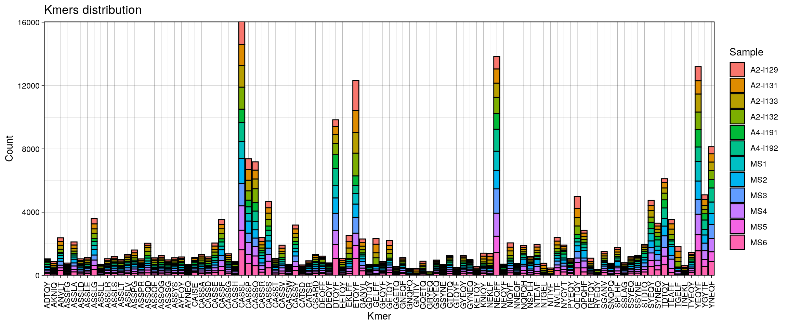
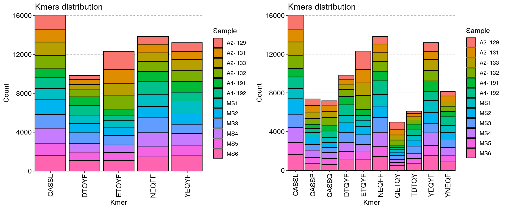
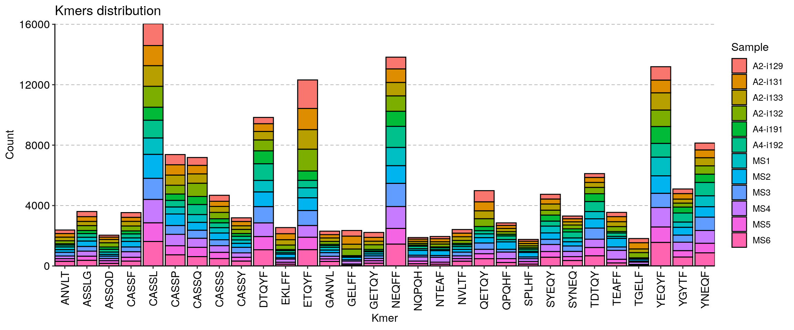
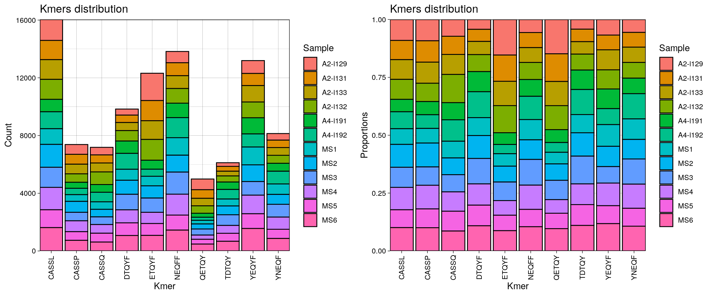
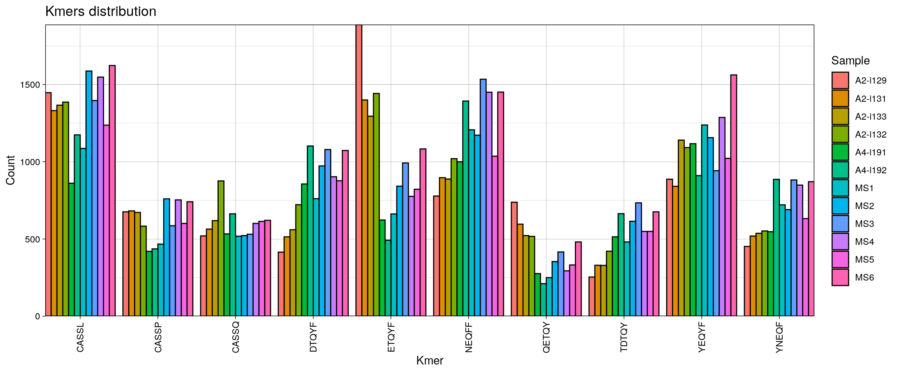
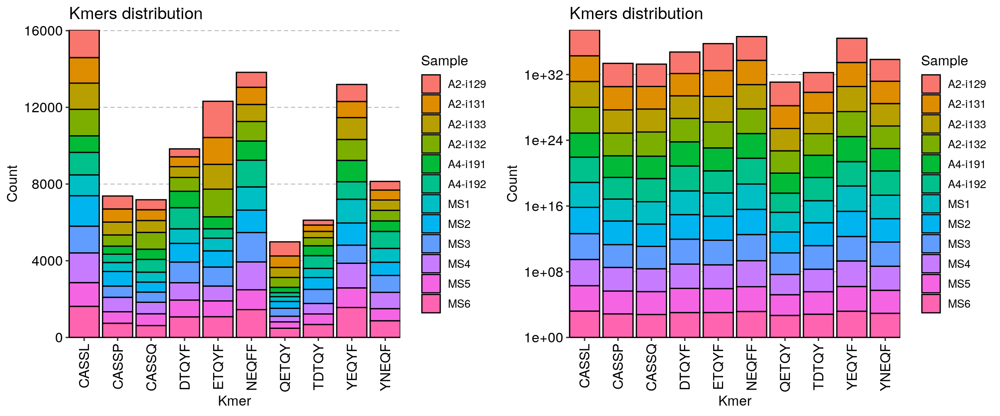
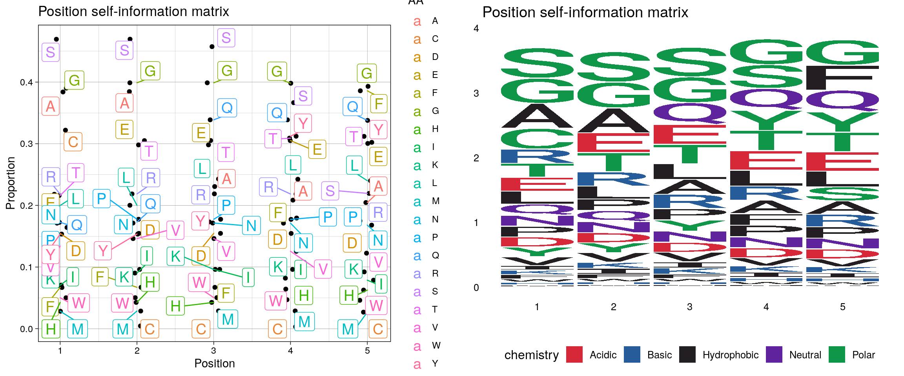

vignettes/web_only/v9_kmers.Rmd
v9_kmers.RmdCounting kmer occurrences in immunarch is very easy. All you need to do is to run the getKmers() function on your data:
## # A tibble: 4,572 x 2
## Kmer Count
## <chr> <int>
## 1 AAA 7
## 2 AAD 6
## 3 AAE 9
## 4 AAF 2
## 5 AAG 45
## 6 AAI 2
## 7 AAK 5
## 8 AAL 4
## 9 AAM 1
## 10 AAN 15
## # … with 4,562 more rowsIf is possible to compute occurrences of kmers in a batch of immune repertoires. In order to do that, you just need to provide a list of immune repertoires to the function. NA means that there is no such kmer found in a sample, specifyed by the column name.
## # A tibble: 189,757 x 13
## Kmer `A2-i129` `A2-i131` `A2-i133` `A2-i132` `A4-i191` `A4-i192` MS1 MS2
## <chr> <int> <int> <int> <int> <int> <int> <int> <int>
## 1 AAAAG NA NA NA NA NA NA NA 1
## 2 AAAAL NA NA NA NA NA NA NA NA
## 3 AAAAW NA NA NA NA NA 1 NA NA
## 4 AAADE NA NA NA NA NA NA NA NA
## 5 AAADN NA 1 NA NA NA NA NA NA
## 6 AAADT NA NA NA NA NA NA NA NA
## 7 AAAEA NA NA NA NA NA NA NA NA
## 8 AAAEN NA NA NA 1 NA NA NA NA
## 9 AAAET NA NA NA NA NA NA NA NA
## 10 AAAFE NA NA NA 1 NA NA NA NA
## # … with 189,747 more rows, and 4 more variables: MS3 <int>, MS4 <int>,
## # MS5 <int>, MS6 <int>Note that by default getKmers() filter out all non-coding sequences before counting the kmer statistics. You can use both coding and non-coding sequences by setting the .coding argument to FALSE:
## # A tibble: 4,848 x 2
## Kmer Count
## <chr> <int>
## 1 **G 1
## 2 *~G 4
## 3 *~L 1
## 4 *AA 1
## 5 *D~ 1
## 6 *ED 1
## 7 *EE 1
## 8 *G~ 1
## 9 *GG 1
## 10 *GP 1
## # … with 4,838 more rowsTo visualise your kmer statistics, the vis() function comes to help:

The vis() function for kmers has a number of arguments to manipulate the plot. First, the .head argument specifies the number of the most abundant kmers to visualise.
p1 = vis(kmers, .head = 5)
p2 = vis(kmers, .head = 10)
p3 = vis(kmers, .head = 30)
grid.arrange(p1, p2, ncol=2)

Second, there are three options to choose from for positions of bars: “stack”, “dodge” and “fill”, adjusted by providing the correposnding option to the .position argument:
p1 = vis(kmers, .head = 10, .position = "stack")
p2 = vis(kmers, .head = 10, .position = "fill")
p3 = vis(kmers, .head = 10, .position = "dodge")
grid.arrange(p1, p2, ncol=2)

Option “stack” stacks all bars on top of each other so you can see the full distribution of kmers. Option “fill” stack all bars on top of each other as well, but normalises it in a such way so you see distribution of counts per-kmer, i.e., you can clearly see which repertoire has more kmer counts than others for a specific kmer. Option “dodge” groups kmer bars of different samples so you can clearly see, which samples has more kmer occurrences overall.
Additional argument is .log needed if your distribution of kmer counts is vastly imbalanced for some of repertoires. It permits to use the log-transformation of y-axis so you can see differences in orders of magnitude in kmer counts rather.
p1 = vis(kmers, .head = 10, .position = "stack")
p2 = vis(kmers, .head = 10, .position = "stack", .log = T)
grid.arrange(p1, p2, ncol=2)
immunarch utilises common approaches to sequence motif analysis and uses different types of matrices to represent sequence motifs:
To compute and visualise sequence motifs, first you need to compute kmer statistics for one of the input immune repertoires, and then apply the kmer_profile() function to compute sequence motif matrices:
## [,1] [,2] [,3] [,4] [,5]
## A 10336 10366 4355 3743 3639
## C 7476 31 32 21 12
## D 2428 2431 2431 2429 2376
## E 3876 6814 6820 6818 6644
## F 795 799 799 3005 10436
## G 10672 11153 11153 11111 10827
## H 452 452 452 756 732
## I 854 1173 1276 1034 981
## K 834 1274 1275 1275 1206
## L 3515 3522 4716 4704 4633
## M 273 277 279 279 256
## N 2809 2811 2812 2807 2733
## P 2646 2957 2957 2952 2896
## Q 2839 2851 8177 8176 8136
## R 4001 4016 4020 4011 3367
## S 16260 16272 15192 9452 4041
## T 3946 6556 6558 6968 6710
## V 1993 2247 2248 1823 1763
## W 553 555 556 510 497
## Y 2405 2406 2855 7089 7078
## attr(,"class")
## [1] "matrix" "immunr_kmer_profile_pfm"Currently we are not supporting sequence motifs analysis for more than one sample, but we are working on it. In order to compute and visualise sequence motif matrices for all of your samples you need to process them one-by-one, which can be easily done in for-loops or via the lapply() function.
Argument .method specifies which matrix to compute:
.method = "freq" - position frequency matrix (PFM);.method = "prob" - position probability matrix (PPM);.method = "wei" - position weight matrix (PWM);.method = "self" - self-information matrix.## [,1] [,2] [,3] [,4] [,5]
## A 10336 10366 4355 3743 3639
## C 7476 31 32 21 12
## D 2428 2431 2431 2429 2376
## E 3876 6814 6820 6818 6644
## F 795 799 799 3005 10436
## G 10672 11153 11153 11111 10827
## H 452 452 452 756 732
## I 854 1173 1276 1034 981
## K 834 1274 1275 1275 1206
## L 3515 3522 4716 4704 4633
## M 273 277 279 279 256
## N 2809 2811 2812 2807 2733
## P 2646 2957 2957 2952 2896
## Q 2839 2851 8177 8176 8136
## R 4001 4016 4020 4011 3367
## S 16260 16272 15192 9452 4041
## T 3946 6556 6558 6968 6710
## V 1993 2247 2248 1823 1763
## W 553 555 556 510 497
## Y 2405 2406 2855 7089 7078
## attr(,"class")
## [1] "matrix" "immunr_kmer_profile_pfm"## [,1] [,2] [,3] [,4] [,5]
## A 0.130896749 0.1312766739 0.0551524132 0.0474019477 0.0460848752
## C 0.094677254 0.0003925889 0.0004052531 0.0002659473 0.0001519699
## D 0.030748578 0.0307865709 0.0307865709 0.0307612426 0.0300900422
## E 0.049086281 0.0862935805 0.0863695655 0.0863442372 0.0841406735
## F 0.010068007 0.0101186632 0.0101186632 0.0380557983 0.1321631650
## G 0.135151907 0.1412433671 0.1412433671 0.1407114725 0.1371148513
## H 0.005724200 0.0057241999 0.0057241999 0.0095741043 0.0092701645
## I 0.010815192 0.0148550587 0.0161594671 0.0130947406 0.0124235401
## K 0.010561909 0.0161341388 0.0161468029 0.0161468029 0.0152729760
## L 0.044514519 0.0446031686 0.0597241746 0.0595722047 0.0586730494
## M 0.003457315 0.0035079721 0.0035333004 0.0035333004 0.0032420247
## N 0.035573623 0.0355989514 0.0356116156 0.0355482948 0.0346111470
## P 0.033509365 0.0374479186 0.0374479186 0.0373845978 0.0366754049
## Q 0.035953548 0.0361055178 0.1035548295 0.1035421653 0.1030355990
## R 0.050669301 0.0508592632 0.0509099198 0.0507959424 0.0426402239
## S 0.205919228 0.2060711979 0.1923939060 0.1197016324 0.0511758672
## T 0.049972772 0.0830262275 0.0830515558 0.0882438610 0.0849765080
## V 0.025239669 0.0284563656 0.0284690298 0.0230867622 0.0223269126
## W 0.007003280 0.0070286083 0.0070412725 0.0064587212 0.0062940871
## Y 0.030457303 0.0304699669 0.0361561744 0.0897762243 0.0896369186
## attr(,"class")
## [1] "matrix" "immunr_kmer_profile_ppm"## [,1] [,2] [,3] [,4] [,5]
## A 9.013462 9.0176436 7.7665289 7.54805124 7.5073982
## C 8.546123 0.6322682 0.6780719 0.07038933 -0.7369656
## D 6.923625 6.9254061 6.9254061 6.92421868 6.8923910
## E 7.598425 8.4123581 8.4136279 8.41320479 8.3759083
## F 5.312883 5.3201236 5.3201236 7.23122118 9.0273531
## G 9.059615 9.1232161 9.1232161 9.11777295 9.0804178
## H 4.498251 4.4982509 4.4982509 5.24031433 5.1937717
## I 5.416164 5.8740592 5.9954845 5.69209238 5.6161812
## K 5.381975 5.9932215 5.9943534 5.99435344 5.9140861
## L 7.457381 7.4602511 7.8814199 7.87774425 7.8558029
## M 3.770829 3.7918141 3.8021932 3.80219322 3.6780719
## N 7.133913 7.1349396 7.1354528 7.13288525 7.0943416
## P 7.047669 7.2079904 7.2079904 7.20554891 7.1779178
## Q 7.149239 7.1553242 8.6754278 8.67525139 8.6681759
## R 7.644217 7.6496155 7.6510517 7.64781816 7.3953199
## S 9.667112 9.6681759 9.5690961 8.88447582 7.6585685
## T 7.624247 8.3566720 8.3571121 8.44460081 8.3901690
## V 6.638798 6.8118563 6.8124982 6.51017075 6.4618887
## W 4.789208 4.7944159 4.7970130 4.67242534 4.6351739
## Y 6.909893 6.9104928 7.1573469 8.46943832 8.4671980
## attr(,"class")
## [1] "matrix" "immunr_kmer_profile_pwm"## [,1] [,2] [,3] [,4] [,5]
## A 0.38398546 0.384551059 0.230560923 0.208516895 0.204596700
## C 0.32198203 0.004442023 0.004566752 0.003158543 0.001927575
## D 0.15446046 0.154596459 0.154596459 0.154505798 0.152092226
## E 0.21345348 0.305013544 0.305172450 0.305119492 0.300470790
## F 0.06679194 0.067054736 0.067054736 0.179461247 0.385864628
## G 0.39023035 0.398835248 0.398835248 0.398099228 0.393045652
## H 0.04263791 0.042637907 0.042637907 0.064210136 0.062603176
## I 0.07063182 0.090213314 0.096172690 0.081905883 0.078650698
## K 0.06933878 0.096058461 0.096115583 0.096115583 0.092139955
## L 0.19985151 0.200121482 0.242811091 0.242412218 0.240040728
## M 0.02826747 0.028608028 0.028777912 0.028777912 0.026807943
## N 0.17121757 0.171302918 0.171345584 0.171132187 0.167954725
## P 0.16417216 0.177464588 0.177464588 0.177255787 0.174906594
## Q 0.17249513 0.173004530 0.338783069 0.338759907 0.337831599
## R 0.21801704 0.218559832 0.218704403 0.218379017 0.194082999
## S 0.46946486 0.469592000 0.457486734 0.366584486 0.219462207
## T 0.21601800 0.298088155 0.298142544 0.309061793 0.302243775
## V 0.13397628 0.146126419 0.146173176 0.125517885 0.122464733
## W 0.05012775 0.050272439 0.050344733 0.046984198 0.046021025
## Y 0.15341551 0.153461021 0.173174125 0.312198864 0.311915245
## attr(,"class")
## [1] "matrix" "immunr_kmer_profile_self"Visualisation of sequence motif matrices is done by vis(). There are two types of plots to choose from - sequence logo and “text logo”. The argument .plot regulates the type of plot: .plot = "seq" for sequence logo plots and .plot = "text" (by default) for “text logo” plots.
kp = kmer_profile(kmers, "self")
p1 = vis(kp)
p2 = vis(kp, .plot = "seq")
grid.arrange(p1, p2, ncol=2)
Can not find an important feature? Have a question or found a bug? Contact us at support@immunomind.io